Machine Learning Pipeline for Automated Detection of ICMEs
Inhalt
3. Machine Learning Pipeline for Automated Detection of ICMEs¶
The work package “Machine Learning Solutions for Data Analysis and Exploitation in Planetary Science” within Europlanet 2024 Research Infrastructure will develop machine learning (ML) powered data analysis and exploitation tools optimized for planetary science.
In this tutorial, we will introduce a ML pipeline for the automated detection of interplanetary coronal mass ejections (ICMEs) in solar wind time series data. We will guide the reader through the developed ML code with the help of a sample data set of solar wind time series data from different spacecraft. (WIND, STEREO-A and STEREO-B)
Europlanet 2024 RI has received funding from the European Union’s Horizon 2020 research and innovation programme under grant agreement No 871149.
We propose a pipeline using a UNet including residual blocks, squeeze and excitation blocks, Atrous Spatial Pyramidal Pooling (ASPP) and attention blocks, similar to the ResUNet++, for the automatic detection of ICMEs. The original model was used for medical image segmentation, while we are dealing with time series and therefore face a slightly different use case.
3.1. Installation Guide¶
This pipeline runs on Python 3.6
git clone https://github.com/epn-ml/Tutorial_IWF-ICMEs.git
python -m venv wsenv
source wsenv/bin/activate
cd Tutorial_IWF-ICMEs
pip install -r requirements.txt
ipython kernel install –user –name=wsenv
jupyter lab
3.2. Data preprocessing¶
# at first, we want to import the necessary packages
# Don't print warnings
import warnings
warnings.filterwarnings('ignore')
import pandas as pds
import datetime
import numpy as np
import matplotlib
import matplotlib.pyplot as plt
import pickle
from sklearn.preprocessing import StandardScaler
import tensorflow as tf
from tensorflow.keras.metrics import Precision, Recall, MeanIoU
from tensorflow.keras.optimizers import Adam, Nadam, SGD
from tensorflow.keras.callbacks import EarlyStopping, ModelCheckpoint, ReduceLROnPlateau, CSVLogger
from tensorflow.keras.models import load_model
from tensorflow.keras.utils import CustomObjectScope
---------------------------------------------------------------------------
ModuleNotFoundError Traceback (most recent call last)
/var/folders/x3/2bzh843n0tv469w6l6sd8sq00000gn/T/ipykernel_86977/1057536613.py in <module>
14 from sklearn.preprocessing import StandardScaler
15
---> 16 import tensorflow as tf
17 from tensorflow.keras.metrics import Precision, Recall, MeanIoU
18 from tensorflow.keras.optimizers import Adam, Nadam, SGD
ModuleNotFoundError: No module named 'tensorflow'
You need to download the complete dataset and event catalog and place it in the folder ‘data’! We start the pipeline by loading and preprocessing the data and catalogs. The module ‘event’ is used to further process the event catalog, listing start and endtime for each event.
import event as evt
# load ICME catalog data
[ic,header,parameters] = pickle.load(open('data/HELCATS_ICMECAT_v20_pandas.p', "rb" ))
# extract important values
isc = ic.loc[:,'sc_insitu']
starttime = ic.loc[:,'icme_start_time']
endtime = ic.loc[:,'mo_end_time']
# Event indices from Wind, STEREO A and STEREO B
iwinind = np.where(isc == 'Wind')[0]
istaind = np.where(isc == 'STEREO-A')[0]
istbind = np.where(isc == 'STEREO-B')[0]
winbegin = starttime[iwinind]
winend = endtime[iwinind]
stabegin = starttime[istaind]
staend = endtime[istaind]
stbbegin = starttime[istbind]
stbend = endtime[istbind]
# get list of events
evtListw = evt.read_cat(winbegin, winend, iwinind)
evtLista = evt.read_cat(stabegin, staend, istaind)
evtListb = evt.read_cat(stbbegin, stbend, istbind)
# Load Wind data
[win, winheader] = pickle.load(open("data/wind_2007_2021_heeq_ndarray.p", "rb"))
# Load STEREO-A data
[sta, atta] = pickle.load(open("data/stereoa_2007_2021_sceq_ndarray.p", "rb"))
# Load STEREO-B data
[stb, attb, bheader] = pickle.load(open("data/stereob_2007_2014_sceq_ndarray.p", "rb"))
Now that data and catalogs are loaded, we can start with the preprocessing. We convert the timestamp to a datetime object and compute some additional features. Furthermore, we resample the datasets to a 10 minute resolution in order to get rid of missing data.
import features
# pre process on the WIND data set
datawin = pds.DataFrame(win)
datawin['time'] = matplotlib.dates.num2date(datawin['time'], tz=None)
datawin['time'] = pds.to_datetime(datawin['time'], format="%Y/%m/%d %H:%M")
datawin.set_index('time', inplace=True)
datawin.index.name = None
datawin.index = datawin.index.tz_localize(None)
datawin.drop(['x', 'y', 'z', 'r', 'lat', 'lon'], axis = 1, inplace=True)
# compute additional features
features.computeBetawiki(datawin)
features.computePdyn(datawin)
features.computeTexrat(datawin)
# resample data
datawin = datawin.resample('10T').mean().dropna()
# pre process on the STEREO A data set
dataa = pds.DataFrame(sta)
dataa['time'] = matplotlib.dates.num2date(dataa['time'], tz=None)
dataa['time'] = pds.to_datetime(dataa['time'], format="%Y/%m/%d %H:%M")
dataa.set_index('time', inplace=True)
dataa.index.name = None
dataa.index = dataa.index.tz_localize(None)
dataa.drop(['x', 'y', 'z', 'r', 'lat', 'lon'], axis = 1, inplace=True)
# compute additional features
features.computeBetawiki(dataa)
features.computePdyn(dataa)
features.computeTexrat(dataa)
# resample data
dataa = dataa.resample('10T').mean().dropna()
# pre process on the STEREO B data set
datab = pds.DataFrame(stb)
datab['time'] = matplotlib.dates.num2date(datab['time'], tz=None)
datab['time'] = pds.to_datetime(datab['time'], format="%Y/%m/%d %H:%M")
datab.set_index('time', inplace=True)
datab.index.name = None
datab.index = datab.index.tz_localize(None)
datab.drop(['x', 'y', 'z', 'r', 'lat', 'lon'], axis = 1, inplace=True)
# compute additional features
features.computeBetawiki(datab)
features.computePdyn(datab)
features.computeTexrat(datab)
# resample data
datab = datab.resample('10T').mean().dropna()
We delete all events from the eventlist, where we do not have sufficient data.
# delete empty events
evtListw = evt.clearempties(evtListw,datawin)
evtLista = evt.clearempties(evtLista,dataa)
evtListb = evt.clearempties(evtListb,datab)
With the help of the event class, we can easily plot example events for all three spacecraft:
# plot example event for WIND
evtListw[0].iwfplotnopred(datawin, 20, 'Wind ')
# plot example event for STEREO A
evtLista[1].iwfplotnopred(dataa, 20, 'STEREO A ')
# plot example event for STEREO B
evtListb[2].iwfplotnopred(datab, 20, 'STEREO B ')
Looking at the WIND dataset we can see, that we now have 10 features:
magnetic field and components
velocity
proton density
proton temperature
beta parameter
dynamic pressure
ratio between expected temperature and proton temperature
However, the values of these features vary in several orders of magnitude. Therefore, we’ll perform scaling to set the mean value to 0 and the standard deviation to 1.
datawin
| bx | by | bz | bt | vt | np | tp | beta | Pdyn | texrat | |
|---|---|---|---|---|---|---|---|---|---|---|
| 2007-01-01 00:00:00 | 1.223244 | -3.684057 | 0.080246 | 3.888975 | 331.939625 | 14.843064 | 19413.118748 | 0.646101 | 2.735598e-09 | 0.720593 |
| 2007-01-01 00:10:00 | 0.951300 | -4.066096 | 0.060271 | 4.184126 | 330.122928 | 14.243541 | 18994.705795 | 0.536584 | 2.596340e-09 | 0.720648 |
| 2007-01-01 00:20:00 | 0.325078 | -2.837958 | 0.867163 | 3.237512 | 328.747382 | 13.780732 | 25637.551120 | 1.314895 | 2.491679e-09 | 0.989950 |
| 2007-01-01 00:30:00 | 0.472819 | -3.130698 | 2.199837 | 3.867082 | 327.870816 | 11.593735 | 24086.478532 | 0.654117 | 2.083827e-09 | 0.939926 |
| 2007-01-01 00:40:00 | -0.159123 | -1.394647 | 1.394927 | 2.462851 | 329.516427 | 12.122023 | 28034.909930 | 2.919348 | 2.202596e-09 | 1.073363 |
| ... | ... | ... | ... | ... | ... | ... | ... | ... | ... | ... |
| 2021-04-28 23:10:00 | -0.941782 | 1.187671 | 0.184250 | 1.526914 | 368.055969 | 4.161323 | 12093.222967 | 0.748976 | 9.428810e-10 | 0.303752 |
| 2021-04-28 23:20:00 | -0.941784 | 1.187670 | 0.184250 | 1.526914 | 368.055969 | 4.161323 | 12093.222967 | 0.748976 | 9.428810e-10 | 0.303752 |
| 2021-04-28 23:30:00 | -0.941785 | 1.187669 | 0.184249 | 1.526914 | 368.055969 | 4.161323 | 12093.222967 | 0.748976 | 9.428810e-10 | 0.303752 |
| 2021-04-28 23:40:00 | -0.941786 | 1.187668 | 0.184248 | 1.526914 | 368.055969 | 4.161323 | 12093.222967 | 0.748976 | 9.428810e-10 | 0.303752 |
| 2021-04-28 23:50:00 | -0.941788 | 1.187667 | 0.184248 | 1.526914 | 368.055969 | 4.161323 | 12093.222967 | 0.748976 | 9.428810e-10 | 0.303752 |
736389 rows × 10 columns
# perform scaling on WIND
scale = StandardScaler()
scale.fit(datawin)
wind_scaled = pds.DataFrame(index = datawin.index, columns = datawin.columns, data = scale.transform(datawin))
# perform scaling on STEREO A
scale = StandardScaler()
scale.fit(dataa)
sta_scaled = pds.DataFrame(index = dataa.index, columns = dataa.columns, data = scale.transform(dataa))
# perform scaling on STEREO B
scale = StandardScaler()
scale.fit(datab)
stb_scaled = pds.DataFrame(index = datab.index, columns = datab.columns, data = scale.transform(datab))
wind_scaled
| bx | by | bz | bt | vt | np | tp | beta | Pdyn | texrat | |
|---|---|---|---|---|---|---|---|---|---|---|
| 2007-01-01 00:00:00 | 0.406938 | -1.064839 | 0.052577 | -0.428195 | -0.861950 | 1.652052 | -0.819134 | -0.076034 | 0.733165 | -0.088519 |
| 2007-01-01 00:10:00 | 0.319958 | -1.172525 | 0.045369 | -0.313126 | -0.880919 | 1.533749 | -0.824326 | -0.103581 | 0.634073 | -0.088511 |
| 2007-01-01 00:20:00 | 0.119663 | -0.826348 | 0.336545 | -0.682178 | -0.895282 | 1.442423 | -0.741898 | 0.092189 | 0.559600 | -0.050420 |
| 2007-01-01 00:30:00 | 0.166918 | -0.908863 | 0.817456 | -0.436731 | -0.904435 | 1.010865 | -0.761144 | -0.074018 | 0.269385 | -0.057496 |
| 2007-01-01 00:40:00 | -0.035206 | -0.419520 | 0.526995 | -0.984191 | -0.887252 | 1.115112 | -0.712150 | 0.495760 | 0.353897 | -0.038622 |
| ... | ... | ... | ... | ... | ... | ... | ... | ... | ... | ... |
| 2021-04-28 23:10:00 | -0.285537 | 0.308361 | 0.090108 | -1.349080 | -0.484834 | -0.455766 | -0.909964 | -0.050158 | -0.542478 | -0.147478 |
| 2021-04-28 23:20:00 | -0.285537 | 0.308361 | 0.090108 | -1.349080 | -0.484834 | -0.455766 | -0.909964 | -0.050158 | -0.542478 | -0.147478 |
| 2021-04-28 23:30:00 | -0.285538 | 0.308361 | 0.090108 | -1.349080 | -0.484834 | -0.455766 | -0.909964 | -0.050158 | -0.542478 | -0.147478 |
| 2021-04-28 23:40:00 | -0.285538 | 0.308361 | 0.090108 | -1.349080 | -0.484834 | -0.455766 | -0.909964 | -0.050158 | -0.542478 | -0.147478 |
| 2021-04-28 23:50:00 | -0.285538 | 0.308360 | 0.090107 | -1.349080 | -0.484834 | -0.455766 | -0.909964 | -0.050158 | -0.542478 | -0.147478 |
736389 rows × 10 columns
We derive the true label for each point in time, by comparing it to the list. 1 indicates that there is an ICME occurring at the moment, 0 indicates that there isn’t.
import preprocess
truelabelw = pds.DataFrame(preprocess.get_truelabel(wind_scaled, evtListw))
truelabela = pds.DataFrame(preprocess.get_truelabel(sta_scaled, evtLista))
truelabelb = pds.DataFrame(preprocess.get_truelabel(stb_scaled, evtListb))
3.3. Splitting the data into training, validation, and testing set¶
When we compare the number of events per year included in our catalogs, we can see variation due to the solar cycle. Therefore, randomly splitting the data into training, validation and testing will propably lead to a severe imbalance. Thus, we manually split into subsets to create different splits of data.
import preprocess
dicoflists = {'WIND': evtListw, 'STEREOA':evtLista, 'STEREOB':evtListb}
preprocess.compare_lists(dicoflists)
WIND STEREOA STEREOB
2007 7 3 4
2008 5 5 8
2009 15 9 13
2010 15 13 16
2011 22 32 28
2012 30 36 33
2013 21 40 29
2014 15 29 17
2015 14 1 0
2016 9 6 0
2017 10 11 0
2018 8 5 0
2019 6 13 0
2020 8 2 0
2021 0 0 0
<Figure size 432x288 with 0 Axes>
We have four different balanced splits to choose from. This gives us approximately the same number of events in each split. The function printpercentage shows us how much of the data is labeled positively. This percentage should be approximately equal over testing, validation and training.
split = 1
testw, valw, trainw = preprocess.getbalancedsplit(split, 'wind')
testa, vala, traina = preprocess.getbalancedsplit(split, 'stereoa')
testb, valb, trainb = preprocess.getbalancedsplit(split, 'stereob')
X_testw, Y_testw, X_valw, Y_valw, X_trainw, Y_trainw = preprocess.getdatas(trainw,testw,valw,wind_scaled,truelabelw)
X_testa, Y_testa, X_vala, Y_vala, X_traina, Y_traina = preprocess.getdatas(traina,testa,vala,sta_scaled,truelabela)
X_testb, Y_testb, X_valb, Y_valb, X_trainb, Y_trainb = preprocess.getdatas(trainb,testb,valb,stb_scaled,truelabelb)
print(preprocess.printpercentage(Y_testw))
print(preprocess.printpercentage(Y_trainw))
print(preprocess.printpercentage(Y_valw))
label 0.052638
dtype: float64
label 0.046366
dtype: float64
label 0.043376
dtype: float64
To train the model on all datasets at once, we need to join them.
X_train = X_trainw.append(X_traina, sort=False)
X_train = X_train.append(X_trainb, sort = False)
Y_train = Y_trainw.append(Y_traina, sort=False)
Y_train = Y_train.append(Y_trainb, sort = False)
####
X_val = X_valw.append(X_vala, sort=False)
X_val = X_val.append(X_valb, sort = False)
Y_val = Y_valw.append(Y_vala, sort=False)
Y_val = Y_val.append(Y_valb, sort = False)
####
X_test = X_testw.append(X_testa, sort=False)
X_test = X_test.append(X_testb, sort = False)
Y_test = Y_testw.append(Y_testa, sort=False)
Y_test = Y_test.append(Y_testb, sort = False)
3.4. ResUNet++¶
By now, we set up everything that we need for a machine learning pipeline. We preprocessed the data in a way, that is understandable for our algorithm. Additionally, we translated our desired output to a label, that fits the type of architecture we want. The area of computer vision is a very well researched field in machine learning. One specific subclass is semantic segmentation, used for example in medial image segmentation. A recent advance is the so called ResUNet++, used for polyp detection. Even though we deal with a different problem here, namely timeseries instead of images, some characteristics of the use cases are similar:
We need information of WHAT and WHERE! Therefore we choose an architecture, that resembles the ResUNet++.
3.4.1. U-Net¶
Consists of Downsampling, Upsampling and Concatenation
Downsampling helps understand WHAT is the important information
Upsampling and Concatenation keeps information of WHERE
3.4.2. Residual Units¶
Deeper = Better?
vanishing/exploding gradient problem hinders optimization for deep CNNs
shortcuts allow deeper networks while also reducing the computational cost
3.4.3. Squeeze and Excitation Units¶
improves channel interdependencies at almost no computational cost
content aware mechanism to weight each channel adaptively
3.4.4. Atrous Spatial Pyramidal Pooling¶
module for resampling a given feature layer at multiple rates prior to convolution
3.4.5. Attention Units¶
boosts performance and reduces computational cost
determines which parts of the network require more attention
The next step is the setup of some parameters and the generators for training and validation. The Generator is based on the tensorflow sequence class, but generates windows in time of a specific size and their corresponding onedimensional “segmentation maps”.
from metrics import dice_coef, dice_loss, true_skill_score
from unetgen import UnetGen
from cycliclr import *
model_path = "model"
## Parameters
C = 10 # number of channels
t = 1024 # window size
image_size = (t,1,C)
batch_size = 32
epochs =500
expclr = CyclicLR(base_lr=0.00001, max_lr=0.001, step_size=1000)
## Generator
train_gen = UnetGen(X_train, Y_train, length=int(t), stride = 120, batch_size=batch_size)
valid_gen = UnetGen(X_val, Y_val, length=int(t), stride = 120,batch_size=batch_size)
Next, we build the model and initiate some callbacks. We also select suitable metrics and start the training process:
from model import ResUnetPlusPlus
#### ResUnet++
arch = ResUnetPlusPlus(input_shape=image_size)
model = arch.build_model()
optimizer = Adam()
metrics = [Recall(), Precision(), dice_coef,true_skill_score, MeanIoU(num_classes=2)]
model.compile(loss=dice_loss, optimizer=optimizer, metrics=metrics)
checkpoint = ModelCheckpoint(model_path, verbose=1, save_best_only=True)
early_stopping = EarlyStopping(monitor='val_loss', patience=20, restore_best_weights=True)
callbacks = [checkpoint, early_stopping,expclr]
2021-12-05 23:44:52.346542: I tensorflow/core/common_runtime/gpu/gpu_device.cc:1510] Created device /job:localhost/replica:0/task:0/device:GPU:0 with 15405 MB memory: -> device: 0, name: Tesla P100-PCIE-16GB, pci bus id: 0000:09:00.0, compute capability: 6.0
model.fit(train_gen,
validation_data=valid_gen,
epochs=epochs,
callbacks=callbacks)
2021-12-05 20:16:30.846649: I tensorflow/compiler/mlir/mlir_graph_optimization_pass.cc:185] None of the MLIR Optimization Passes are enabled (registered 2)
Epoch 1/500
2021-12-05 20:16:35.886758: I tensorflow/stream_executor/cuda/cuda_dnn.cc:369] Loaded cuDNN version 8200
219/219 [==============================] - 130s 547ms/step - loss: 0.6775 - recall: 0.6023 - precision: 0.2377 - dice_coef: 0.3224 - true_skill_score: 0.6404 - mean_io_u: 0.5976 - val_loss: 0.7395 - val_recall: 0.4349 - val_precision: 0.5814 - val_dice_coef: 0.2604 - val_true_skill_score: 0.5735 - val_mean_io_u: 0.6313
Epoch 00001: val_loss improved from inf to 0.73945, saving model to model
2021-12-05 20:18:46.940977: W tensorflow/python/util/util.cc:348] Sets are not currently considered sequences, but this may change in the future, so consider avoiding using them.
INFO:tensorflow:Assets written to: model/assets
Epoch 2/500
219/219 [==============================] - 113s 515ms/step - loss: 0.6057 - recall: 0.5582 - precision: 0.4073 - dice_coef: 0.3943 - true_skill_score: 0.7000 - mean_io_u: 0.6238 - val_loss: 0.7049 - val_recall: 0.6780 - val_precision: 0.3404 - val_dice_coef: 0.2965 - val_true_skill_score: 0.6990 - val_mean_io_u: 0.6196
Epoch 00002: val_loss improved from 0.73945 to 0.70488, saving model to model
INFO:tensorflow:Assets written to: model/assets
Epoch 3/500
219/219 [==============================] - 113s 515ms/step - loss: 0.6073 - recall: 0.5296 - precision: 0.4191 - dice_coef: 0.3927 - true_skill_score: 0.6808 - mean_io_u: 0.6240 - val_loss: 0.7181 - val_recall: 0.8018 - val_precision: 0.2674 - val_dice_coef: 0.2835 - val_true_skill_score: 0.7271 - val_mean_io_u: 0.5782
Epoch 00003: val_loss did not improve from 0.70488
Epoch 4/500
219/219 [==============================] - 113s 515ms/step - loss: 0.6136 - recall: 0.5354 - precision: 0.4217 - dice_coef: 0.3862 - true_skill_score: 0.6894 - mean_io_u: 0.6219 - val_loss: 0.6550 - val_recall: 0.6404 - val_precision: 0.4120 - val_dice_coef: 0.3456 - val_true_skill_score: 0.6853 - val_mean_io_u: 0.6457
Epoch 00004: val_loss improved from 0.70488 to 0.65499, saving model to model
INFO:tensorflow:Assets written to: model/assets
Epoch 5/500
219/219 [==============================] - 113s 515ms/step - loss: 0.6059 - recall: 0.5338 - precision: 0.4202 - dice_coef: 0.3941 - true_skill_score: 0.6970 - mean_io_u: 0.6236 - val_loss: 0.6732 - val_recall: 0.7427 - val_precision: 0.3162 - val_dice_coef: 0.3279 - val_true_skill_score: 0.7060 - val_mean_io_u: 0.6165
Epoch 00005: val_loss did not improve from 0.65499
Epoch 6/500
219/219 [==============================] - 113s 515ms/step - loss: 0.5881 - recall: 0.5409 - precision: 0.4547 - dice_coef: 0.4117 - true_skill_score: 0.6997 - mean_io_u: 0.6346 - val_loss: 0.5220 - val_recall: 0.5578 - val_precision: 0.5810 - val_dice_coef: 0.4769 - val_true_skill_score: 0.6609 - val_mean_io_u: 0.6753
Epoch 00006: val_loss improved from 0.65499 to 0.52200, saving model to model
INFO:tensorflow:Assets written to: model/assets
Epoch 7/500
219/219 [==============================] - 113s 515ms/step - loss: 0.5664 - recall: 0.5559 - precision: 0.4877 - dice_coef: 0.4336 - true_skill_score: 0.7130 - mean_io_u: 0.6470 - val_loss: 0.5341 - val_recall: 0.5464 - val_precision: 0.5776 - val_dice_coef: 0.4649 - val_true_skill_score: 0.6487 - val_mean_io_u: 0.6720
Epoch 00007: val_loss did not improve from 0.52200
Epoch 8/500
219/219 [==============================] - 113s 515ms/step - loss: 0.5449 - recall: 0.5748 - precision: 0.5329 - dice_coef: 0.4551 - true_skill_score: 0.7243 - mean_io_u: 0.6653 - val_loss: 0.5153 - val_recall: 0.3877 - val_precision: 0.7236 - val_dice_coef: 0.4836 - val_true_skill_score: 0.5543 - val_mean_io_u: 0.6290
Epoch 00008: val_loss improved from 0.52200 to 0.51528, saving model to model
INFO:tensorflow:Assets written to: model/assets
Epoch 9/500
219/219 [==============================] - 113s 515ms/step - loss: 0.5308 - recall: 0.5938 - precision: 0.5591 - dice_coef: 0.4693 - true_skill_score: 0.7347 - mean_io_u: 0.6751 - val_loss: 0.5068 - val_recall: 0.4082 - val_precision: 0.7385 - val_dice_coef: 0.4920 - val_true_skill_score: 0.5742 - val_mean_io_u: 0.6397
Epoch 00009: val_loss improved from 0.51528 to 0.50679, saving model to model
INFO:tensorflow:Assets written to: model/assets
Epoch 10/500
219/219 [==============================] - 113s 515ms/step - loss: 0.5184 - recall: 0.6029 - precision: 0.5776 - dice_coef: 0.4817 - true_skill_score: 0.7445 - mean_io_u: 0.6844 - val_loss: 0.4838 - val_recall: 0.4651 - val_precision: 0.6898 - val_dice_coef: 0.5150 - val_true_skill_score: 0.5990 - val_mean_io_u: 0.6548
Epoch 00010: val_loss improved from 0.50679 to 0.48379, saving model to model
INFO:tensorflow:Assets written to: model/assets
Epoch 11/500
219/219 [==============================] - 113s 515ms/step - loss: 0.5277 - recall: 0.6042 - precision: 0.5577 - dice_coef: 0.4723 - true_skill_score: 0.7390 - mean_io_u: 0.6787 - val_loss: 0.4609 - val_recall: 0.4558 - val_precision: 0.6819 - val_dice_coef: 0.5377 - val_true_skill_score: 0.5923 - val_mean_io_u: 0.6599
Epoch 00011: val_loss improved from 0.48379 to 0.46095, saving model to model
INFO:tensorflow:Assets written to: model/assets
Epoch 12/500
219/219 [==============================] - 113s 516ms/step - loss: 0.5466 - recall: 0.5644 - precision: 0.5390 - dice_coef: 0.4535 - true_skill_score: 0.7229 - mean_io_u: 0.6632 - val_loss: 0.5608 - val_recall: 0.5486 - val_precision: 0.5828 - val_dice_coef: 0.4388 - val_true_skill_score: 0.6573 - val_mean_io_u: 0.6759
Epoch 00012: val_loss did not improve from 0.46095
Epoch 13/500
219/219 [==============================] - 113s 515ms/step - loss: 0.5555 - recall: 0.5874 - precision: 0.5148 - dice_coef: 0.4445 - true_skill_score: 0.7261 - mean_io_u: 0.6626 - val_loss: 0.5019 - val_recall: 0.5980 - val_precision: 0.5438 - val_dice_coef: 0.4976 - val_true_skill_score: 0.6721 - val_mean_io_u: 0.6806
Epoch 00013: val_loss did not improve from 0.46095
Epoch 14/500
219/219 [==============================] - 113s 515ms/step - loss: 0.5655 - recall: 0.5757 - precision: 0.4796 - dice_coef: 0.4343 - true_skill_score: 0.7192 - mean_io_u: 0.6503 - val_loss: 0.5674 - val_recall: 0.6625 - val_precision: 0.3984 - val_dice_coef: 0.4326 - val_true_skill_score: 0.6855 - val_mean_io_u: 0.6398
Epoch 00014: val_loss did not improve from 0.46095
Epoch 15/500
219/219 [==============================] - 113s 515ms/step - loss: 0.5579 - recall: 0.5799 - precision: 0.4924 - dice_coef: 0.4419 - true_skill_score: 0.7292 - mean_io_u: 0.6538 - val_loss: 0.4984 - val_recall: 0.4556 - val_precision: 0.6668 - val_dice_coef: 0.5004 - val_true_skill_score: 0.5950 - val_mean_io_u: 0.6588
Epoch 00015: val_loss did not improve from 0.46095
Epoch 16/500
219/219 [==============================] - 113s 515ms/step - loss: 0.5365 - recall: 0.5980 - precision: 0.5194 - dice_coef: 0.4635 - true_skill_score: 0.7368 - mean_io_u: 0.6665 - val_loss: 0.5106 - val_recall: 0.4966 - val_precision: 0.6163 - val_dice_coef: 0.4883 - val_true_skill_score: 0.6274 - val_mean_io_u: 0.6652
Epoch 00016: val_loss did not improve from 0.46095
Epoch 17/500
219/219 [==============================] - 113s 515ms/step - loss: 0.5178 - recall: 0.6201 - precision: 0.5626 - dice_coef: 0.4821 - true_skill_score: 0.7504 - mean_io_u: 0.6836 - val_loss: 0.4551 - val_recall: 0.4459 - val_precision: 0.7228 - val_dice_coef: 0.5435 - val_true_skill_score: 0.5926 - val_mean_io_u: 0.6570
Epoch 00017: val_loss improved from 0.46095 to 0.45511, saving model to model
INFO:tensorflow:Assets written to: model/assets
Epoch 18/500
219/219 [==============================] - 113s 515ms/step - loss: 0.5027 - recall: 0.6379 - precision: 0.5927 - dice_coef: 0.4973 - true_skill_score: 0.7530 - mean_io_u: 0.6972 - val_loss: 0.5153 - val_recall: 0.4717 - val_precision: 0.6780 - val_dice_coef: 0.4837 - val_true_skill_score: 0.6132 - val_mean_io_u: 0.6568
Epoch 00018: val_loss did not improve from 0.45511
Epoch 19/500
219/219 [==============================] - 113s 514ms/step - loss: 0.4893 - recall: 0.6617 - precision: 0.5991 - dice_coef: 0.5107 - true_skill_score: 0.7716 - mean_io_u: 0.7075 - val_loss: 0.5073 - val_recall: 0.4543 - val_precision: 0.6875 - val_dice_coef: 0.4916 - val_true_skill_score: 0.6043 - val_mean_io_u: 0.6548
Epoch 00019: val_loss did not improve from 0.45511
Epoch 20/500
219/219 [==============================] - 113s 514ms/step - loss: 0.4934 - recall: 0.6508 - precision: 0.6018 - dice_coef: 0.5066 - true_skill_score: 0.7629 - mean_io_u: 0.7037 - val_loss: 0.5570 - val_recall: 0.4194 - val_precision: 0.6691 - val_dice_coef: 0.4421 - val_true_skill_score: 0.5829 - val_mean_io_u: 0.6465
Epoch 00020: val_loss did not improve from 0.45511
Epoch 21/500
219/219 [==============================] - 113s 515ms/step - loss: 0.5122 - recall: 0.6448 - precision: 0.5744 - dice_coef: 0.4878 - true_skill_score: 0.7477 - mean_io_u: 0.6936 - val_loss: 0.5110 - val_recall: 0.4910 - val_precision: 0.6056 - val_dice_coef: 0.4881 - val_true_skill_score: 0.6054 - val_mean_io_u: 0.6583
Epoch 00021: val_loss did not improve from 0.45511
Epoch 22/500
219/219 [==============================] - 113s 514ms/step - loss: 0.5233 - recall: 0.6048 - precision: 0.5554 - dice_coef: 0.4767 - true_skill_score: 0.7422 - mean_io_u: 0.6791 - val_loss: 0.5684 - val_recall: 0.5652 - val_precision: 0.5347 - val_dice_coef: 0.4318 - val_true_skill_score: 0.6585 - val_mean_io_u: 0.6683
Epoch 00022: val_loss did not improve from 0.45511
Epoch 23/500
219/219 [==============================] - 113s 515ms/step - loss: 0.5954 - recall: 0.5149 - precision: 0.4576 - dice_coef: 0.4047 - true_skill_score: 0.6747 - mean_io_u: 0.6319 - val_loss: 0.7225 - val_recall: 0.6667 - val_precision: 0.3095 - val_dice_coef: 0.2777 - val_true_skill_score: 0.6603 - val_mean_io_u: 0.6110
Epoch 00023: val_loss did not improve from 0.45511
Epoch 24/500
219/219 [==============================] - 113s 514ms/step - loss: 0.5702 - recall: 0.5628 - precision: 0.4956 - dice_coef: 0.4298 - true_skill_score: 0.7211 - mean_io_u: 0.6492 - val_loss: 0.5763 - val_recall: 0.5461 - val_precision: 0.5568 - val_dice_coef: 0.4229 - val_true_skill_score: 0.6465 - val_mean_io_u: 0.6667
Epoch 00024: val_loss did not improve from 0.45511
Epoch 25/500
219/219 [==============================] - 113s 514ms/step - loss: 0.5337 - recall: 0.5873 - precision: 0.5664 - dice_coef: 0.4664 - true_skill_score: 0.7315 - mean_io_u: 0.6748 - val_loss: 0.4622 - val_recall: 0.4206 - val_precision: 0.7112 - val_dice_coef: 0.5364 - val_true_skill_score: 0.5655 - val_mean_io_u: 0.6462
Epoch 00025: val_loss did not improve from 0.45511
Epoch 26/500
219/219 [==============================] - 113s 514ms/step - loss: 0.5195 - recall: 0.5810 - precision: 0.5736 - dice_coef: 0.4806 - true_skill_score: 0.7317 - mean_io_u: 0.6745 - val_loss: 0.4703 - val_recall: 0.3423 - val_precision: 0.8260 - val_dice_coef: 0.5284 - val_true_skill_score: 0.5254 - val_mean_io_u: 0.6143
Epoch 00026: val_loss did not improve from 0.45511
Epoch 27/500
219/219 [==============================] - 113s 515ms/step - loss: 0.5009 - recall: 0.6284 - precision: 0.5978 - dice_coef: 0.4991 - true_skill_score: 0.7561 - mean_io_u: 0.6961 - val_loss: 0.5101 - val_recall: 0.4939 - val_precision: 0.6713 - val_dice_coef: 0.4894 - val_true_skill_score: 0.6196 - val_mean_io_u: 0.6682
Epoch 00027: val_loss did not improve from 0.45511
Epoch 28/500
219/219 [==============================] - 113s 514ms/step - loss: 0.4844 - recall: 0.6553 - precision: 0.6071 - dice_coef: 0.5156 - true_skill_score: 0.7721 - mean_io_u: 0.7063 - val_loss: 0.4994 - val_recall: 0.4991 - val_precision: 0.6767 - val_dice_coef: 0.5002 - val_true_skill_score: 0.6175 - val_mean_io_u: 0.6713
Epoch 00028: val_loss did not improve from 0.45511
Epoch 29/500
219/219 [==============================] - 113s 515ms/step - loss: 0.4961 - recall: 0.6655 - precision: 0.5657 - dice_coef: 0.5039 - true_skill_score: 0.7702 - mean_io_u: 0.6978 - val_loss: 0.4998 - val_recall: 0.3970 - val_precision: 0.7453 - val_dice_coef: 0.4992 - val_true_skill_score: 0.5634 - val_mean_io_u: 0.6303
Epoch 00029: val_loss did not improve from 0.45511
Epoch 30/500
219/219 [==============================] - 113s 514ms/step - loss: 0.4987 - recall: 0.6472 - precision: 0.5812 - dice_coef: 0.5013 - true_skill_score: 0.7560 - mean_io_u: 0.6927 - val_loss: 0.5522 - val_recall: 0.5010 - val_precision: 0.6347 - val_dice_coef: 0.4479 - val_true_skill_score: 0.6196 - val_mean_io_u: 0.6677
Epoch 00030: val_loss did not improve from 0.45511
Epoch 31/500
219/219 [==============================] - 113s 514ms/step - loss: 0.5162 - recall: 0.6342 - precision: 0.5320 - dice_coef: 0.4838 - true_skill_score: 0.7464 - mean_io_u: 0.6769 - val_loss: 0.6465 - val_recall: 0.5490 - val_precision: 0.5060 - val_dice_coef: 0.3541 - val_true_skill_score: 0.6417 - val_mean_io_u: 0.6565
Epoch 00031: val_loss did not improve from 0.45511
Epoch 32/500
219/219 [==============================] - 113s 514ms/step - loss: 0.5224 - recall: 0.6156 - precision: 0.5322 - dice_coef: 0.4776 - true_skill_score: 0.7459 - mean_io_u: 0.6728 - val_loss: 0.5431 - val_recall: 0.4973 - val_precision: 0.6007 - val_dice_coef: 0.4570 - val_true_skill_score: 0.6153 - val_mean_io_u: 0.6624
Epoch 00032: val_loss did not improve from 0.45511
Epoch 33/500
219/219 [==============================] - 113s 514ms/step - loss: 0.5046 - recall: 0.6549 - precision: 0.5772 - dice_coef: 0.4955 - true_skill_score: 0.7630 - mean_io_u: 0.6946 - val_loss: 0.5717 - val_recall: 0.5058 - val_precision: 0.6136 - val_dice_coef: 0.4276 - val_true_skill_score: 0.6201 - val_mean_io_u: 0.6630
Epoch 00033: val_loss did not improve from 0.45511
Epoch 34/500
219/219 [==============================] - 113s 514ms/step - loss: 0.4824 - recall: 0.6971 - precision: 0.5820 - dice_coef: 0.5176 - true_skill_score: 0.7885 - mean_io_u: 0.7122 - val_loss: 0.4688 - val_recall: 0.4237 - val_precision: 0.7052 - val_dice_coef: 0.5300 - val_true_skill_score: 0.5648 - val_mean_io_u: 0.6483
Epoch 00034: val_loss did not improve from 0.45511
Epoch 35/500
219/219 [==============================] - 113s 514ms/step - loss: 0.4749 - recall: 0.6976 - precision: 0.6228 - dice_coef: 0.5252 - true_skill_score: 0.7879 - mean_io_u: 0.7234 - val_loss: 0.5650 - val_recall: 0.5073 - val_precision: 0.6727 - val_dice_coef: 0.4345 - val_true_skill_score: 0.6205 - val_mean_io_u: 0.6677
Epoch 00035: val_loss did not improve from 0.45511
Epoch 36/500
219/219 [==============================] - 113s 514ms/step - loss: 0.4614 - recall: 0.7143 - precision: 0.6361 - dice_coef: 0.5386 - true_skill_score: 0.8045 - mean_io_u: 0.7328 - val_loss: 0.5654 - val_recall: 0.4905 - val_precision: 0.6553 - val_dice_coef: 0.4341 - val_true_skill_score: 0.6081 - val_mean_io_u: 0.6619
Epoch 00036: val_loss did not improve from 0.45511
Epoch 37/500
219/219 [==============================] - 113s 514ms/step - loss: 0.4538 - recall: 0.7334 - precision: 0.6364 - dice_coef: 0.5463 - true_skill_score: 0.8159 - mean_io_u: 0.7400 - val_loss: 0.5604 - val_recall: 0.5036 - val_precision: 0.6424 - val_dice_coef: 0.4392 - val_true_skill_score: 0.6153 - val_mean_io_u: 0.6684
Epoch 00037: val_loss did not improve from 0.45511
<keras.callbacks.History at 0x7fdf660d07c0>
3.5. Evaluation¶
After the training process is finished, we continue by testing our model on unseen data:
import postprocess
from glob import glob
batch_size = 1
## Model
with CustomObjectScope({'dice_loss': dice_loss, 'dice_coef': dice_coef, 'true_skill_score': true_skill_score}):
model = load_model(model_path)
# TEST WIND
test_genw = UnetGen(X_testw, Y_testw, length=int(t), stride = int(t),batch_size=batch_size)
model.evaluate(test_genw, verbose=1)
resultw = postprocess.generate_result(X_testw, Y_testw, model,C,t)
# TEST STEREO A
test_gena = UnetGen(X_testa, Y_testa, length=int(t), stride = int(t),batch_size=batch_size)
model.evaluate(test_gena, verbose=1)
resulta = postprocess.generate_result(X_testa, Y_testa, model,C,t)
# TEST STEREO B
test_genb = UnetGen(X_testb, Y_testb, length=int(t), stride = int(t),batch_size=batch_size)
model.evaluate(test_genb, verbose=1)
resultb = postprocess.generate_result(X_testb, Y_testb, model,C,t)
2021-12-05 23:44:59.467293: I tensorflow/compiler/mlir/mlir_graph_optimization_pass.cc:185] None of the MLIR Optimization Passes are enabled (registered 2)
2021-12-05 23:45:01.187044: I tensorflow/stream_executor/cuda/cuda_dnn.cc:369] Loaded cuDNN version 8200
151/151 [==============================] - 6s 24ms/step - loss: 0.1881 - recall: 0.6126 - precision: 0.6893 - dice_coef: 0.8119 - true_skill_score: 0.8451 - mean_io_u: 0.7166
100%|█████████████████████████████████████████| 151/151 [00:12<00:00, 11.96it/s]
108/108 [==============================] - 3s 24ms/step - loss: 0.2628 - recall: 0.4913 - precision: 0.7317 - dice_coef: 0.7372 - true_skill_score: 0.7299 - mean_io_u: 0.6717
100%|█████████████████████████████████████████| 108/108 [00:08<00:00, 12.25it/s]
90/90 [==============================] - 2s 23ms/step - loss: 0.2455 - recall: 0.4734 - precision: 0.7061 - dice_coef: 0.7545 - true_skill_score: 0.7714 - mean_io_u: 0.6590
100%|███████████████████████████████████████████| 90/90 [00:07<00:00, 12.49it/s]
We use the following metrics to evaluate our model:
3.5.1. Precision¶
percentage of true ICMEs predicted by the algorithm out of all predicted
True Positives/(True Positives + False Positives)
3.5.2. Recall¶
percentage of true ICMEs predicted by the algorithm out of all true
True Positives/(True Positives + False Negatives)
3.5.3. Mean IoU¶
True Positives/(True Positives + False Negatives + False Positives)
3.5.4. Dice Coefficient¶
2 x Intersection/Union
3.5.5. True Skill Score¶
True Positives/(True Positives + False Negatives) - False Positives/(False Positives + True Negatives)
To get a better feeling for the performance in terms of detection rate, we first need to convert our onedimensional segmentation map to a list of events:
# evaluate WIND
resultw.index = pds.to_datetime(resultw.index)
resultbinw = postprocess.make_binary(resultw['pred'], 0.5)
eventsw = postprocess.makeEventList(resultbinw, 1, 10)
ICMEsw = postprocess.removeCreepy(eventsw, 3)
test_cloudsw = [x for x in evtListw if (x.begin.year in testw)]
# evaluate STEREO A
resulta.index = pds.to_datetime(resulta.index)
resultbina = postprocess.make_binary(resulta['pred'], 0.5)
eventsa = postprocess.makeEventList(resultbina, 1, 10)
ICMEsa = postprocess.removeCreepy(eventsa, 3)
test_cloudsa = [x for x in evtLista if (x.begin.year in testa)]
# evaluate STEREO B
resultb.index = pds.to_datetime(resultb.index)
resultbinb = postprocess.make_binary(resultb['pred'], 0.5)
eventsb = postprocess.makeEventList(resultbinb, 1, 10)
ICMEsb = postprocess.removeCreepy(eventsb, 3)
test_cloudsb = [x for x in evtListb if (x.begin.year in testb)]
We can then plot the events and their associated similarity values to compare true label to predicted label.
#Plot events and associated similarity values
for i in range(0, len(test_cloudsw)):
test_cloudsw[i].plot_similaritymap(datawin,20,i,'WIND ',resultw)
for i in range(0, len(test_cloudsa)):
test_cloudsa[i].plot_similaritymap(dataa,20,i,'STEREO A ',resulta)
for i in range(0, len(test_cloudsb)):
test_cloudsb[i].plot_similaritymap(datab,20,i,'STEREO B ',resultb)


 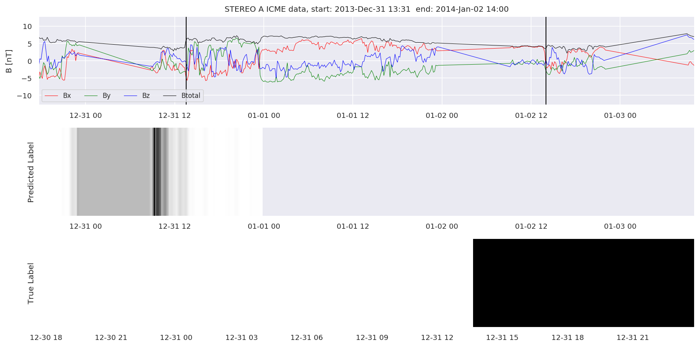
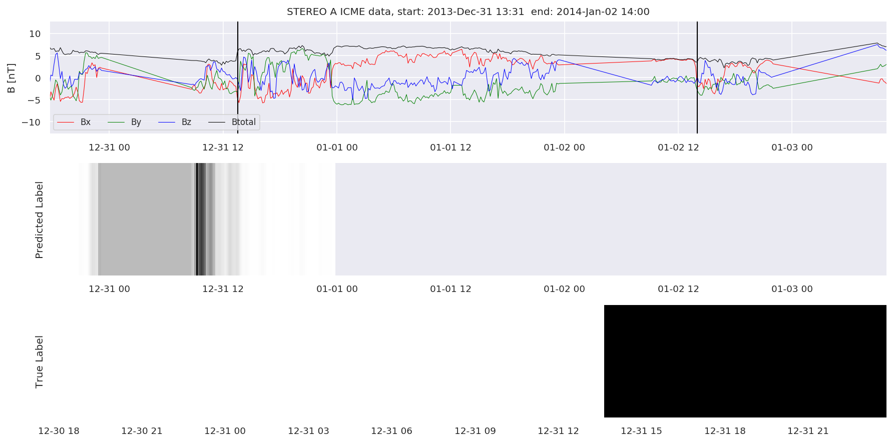
 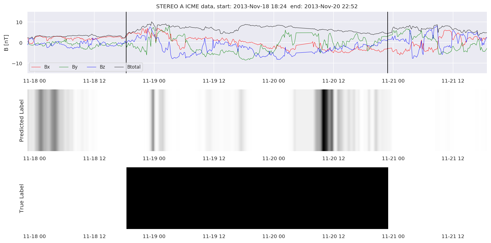
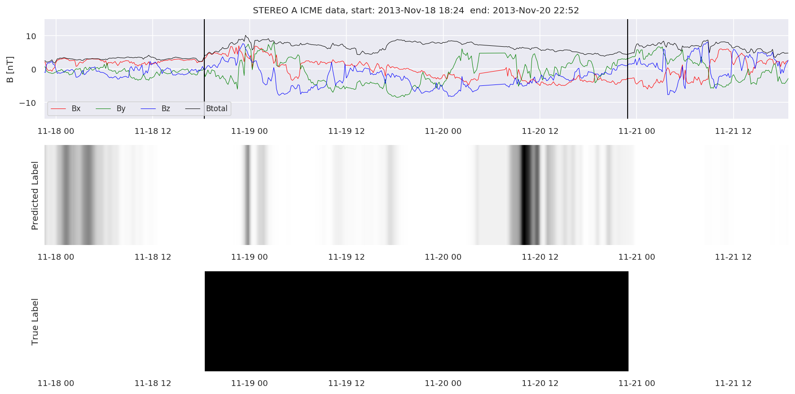
 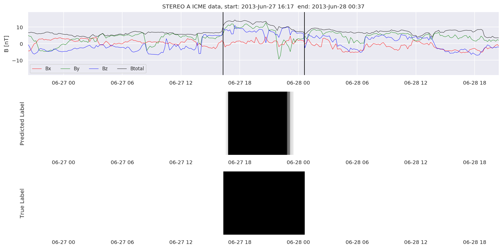
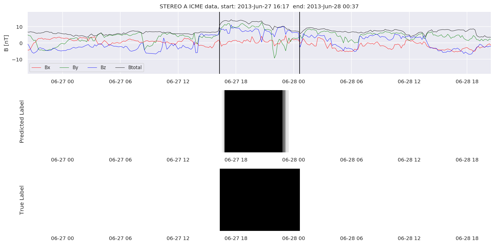
 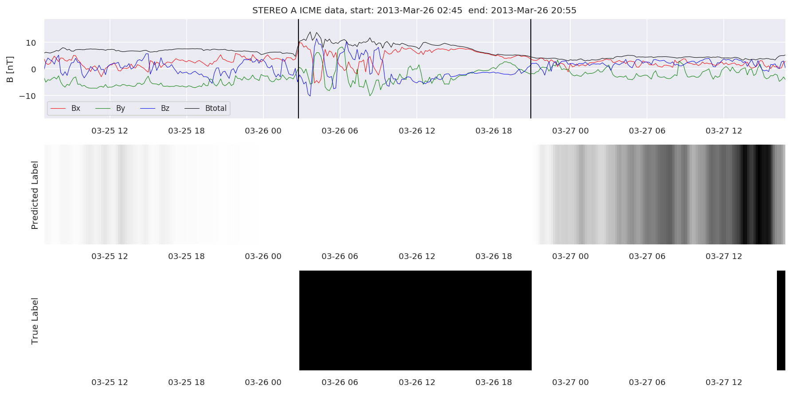
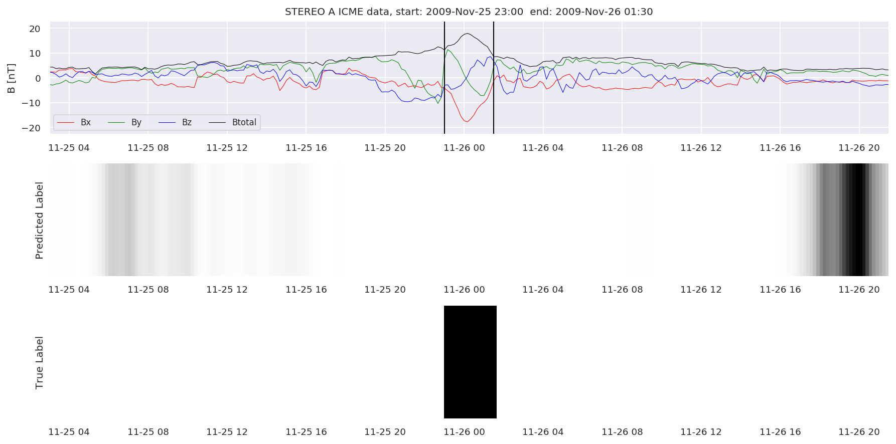
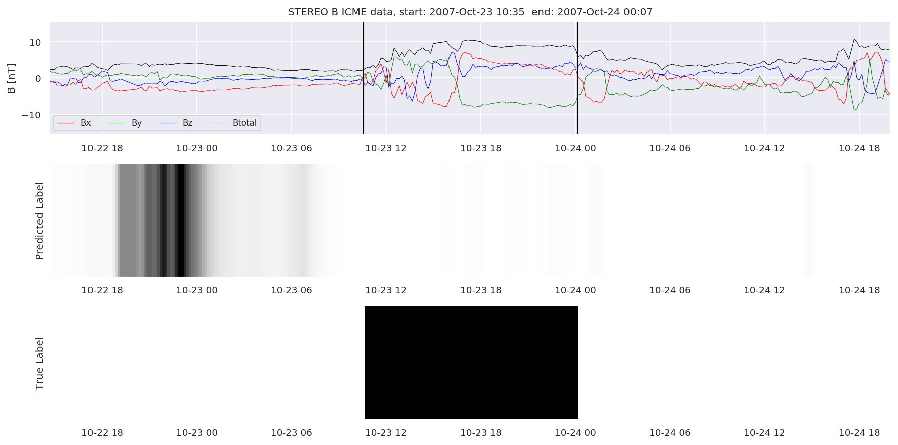
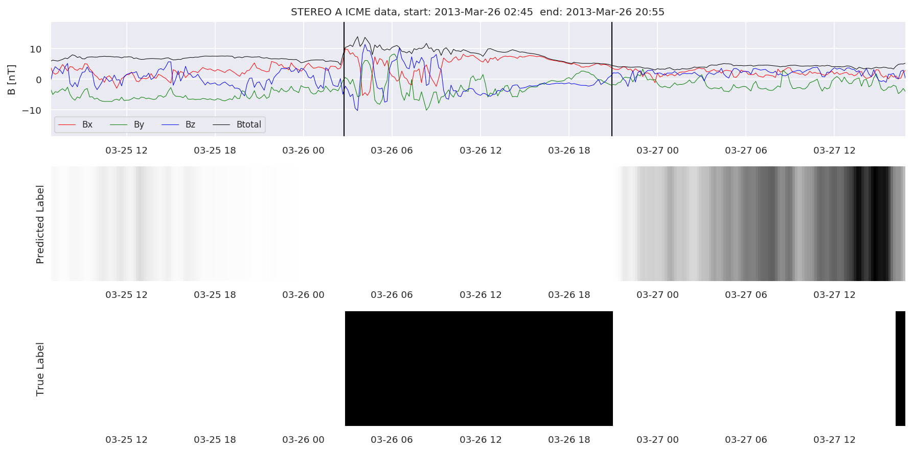
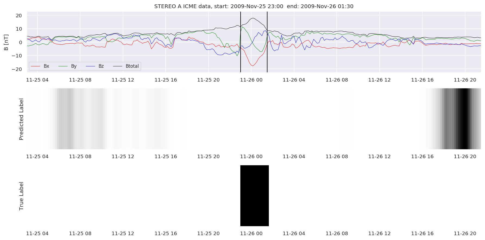
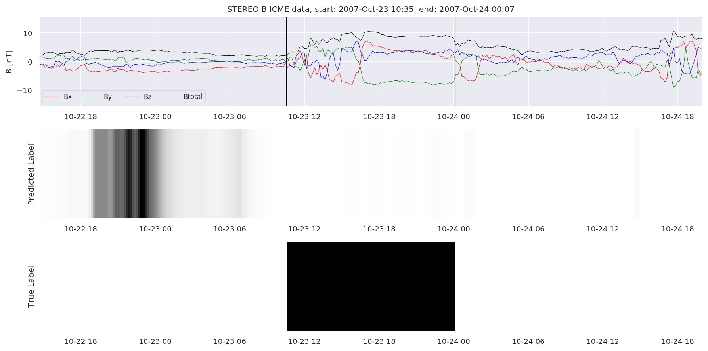
Finally, we compare the true eventlist to the eventlists the model predicted.
# Score by event WIND
print('WIND:')
TPw, FNw, FPw, detectedw = postprocess.evaluate(ICMEsw, test_cloudsw, thres=0.1)
print('Precision is:',len(TPw)/(len(TPw)+len(FPw)))
print('Recall is:',len(TPw)/(len(TPw)+len(FNw)))
print('True Positives', len(TPw))
print('False Negatives', len(FNw))
print('False Positives', len(FPw))
# Score by event STEREO A
print('---------------------')
print('STEREO A:')
TPa, FNa, FPa, detecteda = postprocess.evaluate(ICMEsa, test_cloudsa, thres=0.1)
print('Precision is:',len(TPa)/(len(TPa)+len(FPa)))
print('Recall is:',len(TPa)/(len(TPa)+len(FNa)))
print('True Positives', len(TPa))
print('False Negatives', len(FNa))
print('False Positives', len(FPa))
# Score by event STEREO B
print('---------------------')
print('STEREO B:')
TPb, FNb, FPb, detectedb = postprocess.evaluate(ICMEsb, test_cloudsb, thres=0.1)
print('Precision is:',len(TPb)/(len(TPb)+len(FPb)))
print('Recall is:',len(TPb)/(len(TPb)+len(FNb)))
print('True Positives', len(TPb))
print('False Negatives', len(FNb))
print('False Positives', len(FPb))
WIND:
Precision is: 0.6829268292682927
Recall is: 0.6363636363636364
True Positives 28
False Negatives 16
False Positives 13
---------------------
STEREO A:
Precision is: 0.7105263157894737
Recall is: 0.54
True Positives 27
False Negatives 23
False Positives 11
---------------------
STEREO B:
Precision is: 0.7586206896551724
Recall is: 0.5945945945945946
True Positives 22
False Negatives 15
False Positives 7
We can see, that even though there’s room for improvement, the results of our pipeline are reasonable given the fact, that the problem is quite complicated. Some of the False Positives might even be structures that are actually similar to ICMEs.
#Plot FNs, FPs and Detected events
for i in range(0, len(FNw)):
FNw[i].iwfplotnopred(datawin, 20, 'WIND - FalseNegative')
for i in range(0, len(FPw)):
FPw[i].iwfplotnopred(datawin, 20, 'WIND - FalsePositive')
for i in range(0, len(detectedw)):
predstart = TPw[i].begin
predend = TPw[i].end
detectedw[i].iwfplot(datawin, 20, i, 'WIND - Detected-', predstart, predend)
for i in range(0, len(FNa)):
FNa[i].iwfplotnopred(dataa, 20, 'STEREO A - FalseNegative')
for i in range(0, len(FPa)):
FPa[i].iwfplotnopred(dataa, 20, 'STEREO A - FalsePositive')
for i in range(0, len(detecteda)):
predstart = TPa[i].begin
predend = TPa[i].end
detecteda[i].iwfplot(dataa, 20, i, 'STEREO A - Detected-', predstart, predend)
for i in range(0, len(FNb)):
FNb[i].iwfplotnopred(datab, 20, 'STEREO B - FalseNegative')
for i in range(0, len(FPb)):
FPb[i].iwfplotnopred(datab, 20, 'STEREO B - FalsePositive')
for i in range(0, len(detectedb)):
predstart = TPb[i].begin
predend = TPb[i].end
detectedb[i].iwfplot(datab, 20, i, 'STEREO B - Detected-', predstart, predend)


Last but not least, we plot two well-known evaluation metrics:
from sklearn.metrics import precision_recall_curve, auc, plot_precision_recall_curve
# calculate precision-recall curve
precisionw, recallw, thresholdsw = precision_recall_curve(resultw['true'], resultw['pred'])
pr_aucw = auc(recallw, precisionw)
precisiona, recalla, thresholdsa = precision_recall_curve(resulta['true'], resulta['pred'])
pr_auca = auc(recalla, precisiona)
precisionb, recallb, thresholdsb = precision_recall_curve(resultb['true'], resultb['pred'])
pr_aucb = auc(recallb, precisionb)
plt.figure()
plt.title('Precision vs Recall')
plt.plot(recallw, precisionw, 'k', label = 'WIND - AUC = %0.2f' % pr_aucw)
plt.plot(recalla, precisiona, 'r', label = 'STEREO A - AUC = %0.2f' % pr_auca)
plt.plot(recallb, precisionb, 'b', label = 'STEREO B - AUC = %0.2f' % pr_aucb)
plt.legend(loc = 'lower right')
plt.xlim([0, 1])
plt.ylim([0, 1.05])
plt.ylabel('Precision')
plt.xlabel('Recall')
plt.show()
from sklearn.metrics import roc_curve, roc_auc_score
# calculate roc curve
fprw, tprw, thresholdsw = roc_curve(resultw['true'], resultw['pred'])
fpra, tpra, thresholdsa = roc_curve(resulta['true'], resulta['pred'])
fprb, tprb, thresholdsb = roc_curve(resultb['true'], resultb['pred'])
auc_rocw = roc_auc_score(resultw['true'], resultw['pred'])
auc_roca = roc_auc_score(resulta['true'], resulta['pred'])
auc_rocb = roc_auc_score(resultb['true'], resultb['pred'])
plt.title('Receiver Operating Characteristic')
plt.plot(fprw, tprw, 'k', label = 'WIND - AUC = %0.2f' % auc_rocw)
plt.plot(fpra, tpra, 'r', label = 'STEREO A - AUC = %0.2f' % auc_roca)
plt.plot(fprb, tprb, 'b', label = 'STEREO B - AUC = %0.2f' % auc_rocb)
plt.plot([0, 1], [0, 1],'g--',label = 'No skill')
plt.legend(loc = 'lower right')
plt.xlim([0, 1])
plt.ylim([0, 1.05])
plt.ylabel('True Positive Rate')
plt.xlabel('False Positive Rate')
plt.show()